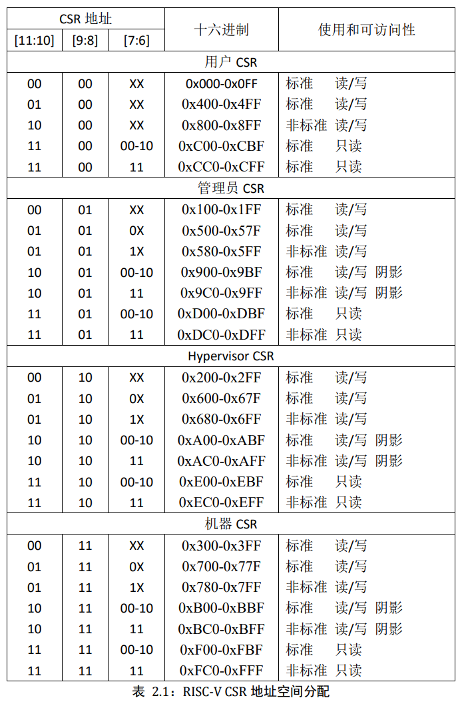
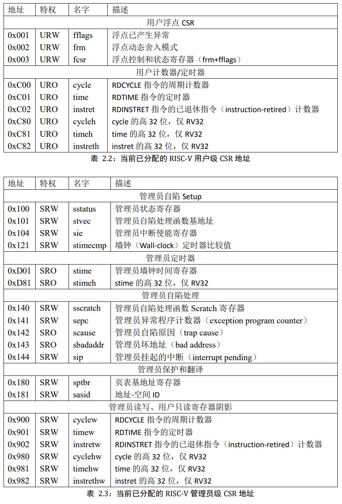
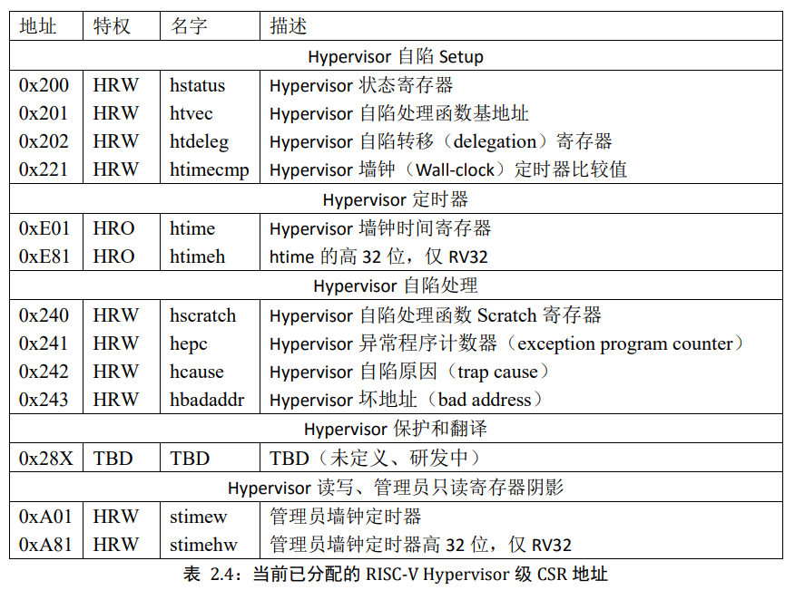
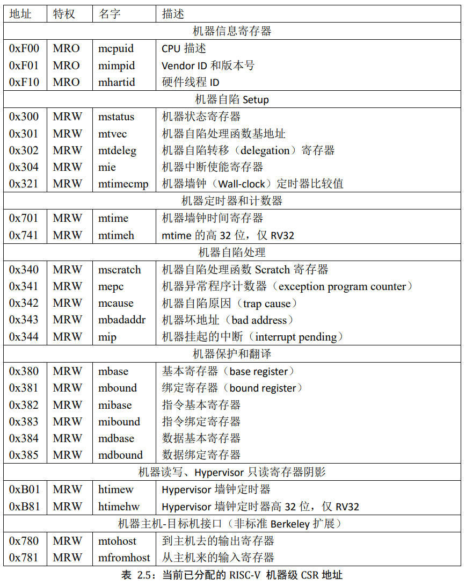
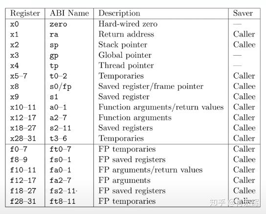

特权模式
四种特权模式:
| 名 | 缩写 | 序号 |
|---|---|---|
| Machine mode | M-mode | 3 |
| Hypervisor mode | H-mode | 2 |
| Supervisor mode | S-mode | 1 |
| User mode | U-mode | 0 |
中断
主要类型:
- 软件中断, 通过写入 mip CSR寄存器触发的中断
- 时钟中断, 由寄存器mtime和mtimecmp控制
- 外部中断, 受RISC-V 平台级中断控制器(Platform Level Interrupt Controller, PLIC)控制的,由外部设备触发的中断
中断处理程序
需要通过CSR手动开启, 否则CPU不会接受到任何中断(除了不可屏蔽中断), CPU异常在异常条件满足就会触发,无法通过CSR屏蔽
开启中断步骤:
- mstatus[MIE]总开关(置1)
- mie CSR寄存器为针对每种中断类型的独立开关
mstatus 前面的m代表的是M-mode的status寄存器, 如果是S-mode, 则寄存器名为 sstatus, 在看这些寄存器名时如果读不通可以看最前面的可不可以翻译为特权级
中断响应程序的地址需要放在 mtvec CSR中,目前 RISCV 支持两种类型的中断向量:
- 直接模式(direct), 所有中断均发送给同一个中断响应程序
- 向量化模式(vectored), 外部中断根据中断类型发送给不同的中断响应程序, 所有的异常依旧发送给同一个异常响应程序
中断发生时, CPU的一些操作:
- 将 发生异常的指令 或者 被中断时的下一条指令 的PC地址放入 mepc CSR
- 将中断类型码放入 mcause CSR
- 如果中断带有附加的信息, 则会放入 mtval CSR
- 如果是外部引发的中断, 则会将 mstatus[MPIE] = mstatus[MIE], 并且 mstatus[MIE] = 0, 相当于进入中断响应程序前暂时关闭中断, PIE为 previous interrupt enabled的缩写
- 将当前特权模式序号(machine mode那些)放入mstatus[MPP]中, 并将当前模式设为M-mode
- 根据 mtvec CSR的值决定中断响应程序的地址, 并跳转
默认处理的特权级为M-mode, 但也可以配置中断代理,下放到低权限的模式(待补充)
M-mode的中断响应程序通过 mret 指令 从中断中返回, 该指令执行:
- 将当前特权模式设置回 mstatus[MPP]
- 令
mstatus[MIE] = mstatus[MPIE]，以还原发生中断前的中断开关； mstatus[MPIE] = 1；mstatus[MPP]将被设为 U（如果 CPU 不支持 U-mode，则设为 M）；- 将 PC 的值设为
mepc的值，以返回中断前的程序。
CSR
CSR指令
CSR 的全称为 控制与状态寄存器, 反映和控制 CPU 当前的状态和执行机制。(通用寄存器不一样)
| 指令 | 说明 | 样例 | 样例说明 |
|---|---|---|---|
| csrr | 读取CSR值到通用寄存器中 | csrr t0, mstatus | 将mstatus值读入t0 |
| csrw | 将通用寄存器值写入CSR中 | csrw mstatus, t0 | 将t0的值写入mstatus |
| csrs | 将CSR中的指定bit设为1 | csrsi mstatus, (1<<2) | 将mstatus的右侧第3位置1(i代表immediate value) |
| csrc | 将CSR中的指定bit设为0 | csrci mstatus, (1<<2) | 将mstatus的右侧第3位置0(i代表immediate value) |
| csrrw | 读取CSR值到通用寄存器内,然后将另一个值写入CSR | csrrw t0, mstatus, t1 | 值交换为: t1 写入 mstatus 写入 t0 |
| csrrs | 读取一个 CSR 的值到通用寄存器，然后把该 CSR 中指定的 bit 置 1 | 暂无 | |
| csrrc | 读取一个 CSR 的值到通用寄存器，然后把该 CSR 中指定的 bit 置 0 | 暂无 | |
CSR 寄存器
这里放从 RISC-V 特权指令集手册 的截图:




比较重要的寄存器可能会单独拉出来一章讲
通用寄存器
